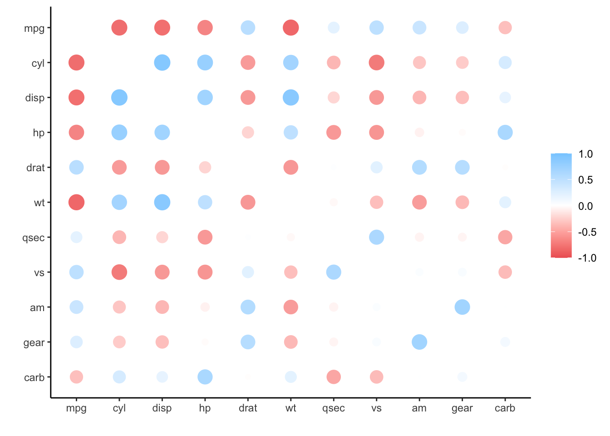

linear_reg() %>%
set_engine("lm") %>% # << Engine set to `lm`
fit(mpg ~ ., data = mtcars) # << Local `mtcars`tidymodels and Spark
Intro
tidymodels is a collection of packages for modeling and machine learning. Just like sparklyr, tidymodels uses tidyverse principles.
sparklyr allows us to use dplyr verbs to manipulate data. We use the same commands in R when manipulating local data or Spark data. Similarly, sparklyr and some packages in the tidymodels ecosystem offer integration.
As with any evolving framework, the integration does not apply to all functions. This article aims at enumerating what is available today, and why should we consider using the tidymodels implementation in our day-to-day work with Spark.
Our expectation is that this article will be constantly updated as the integration between tidymodels and sparklyr grows and improves.
Model specification with parsnip
parsnip provides a common interface to models. This enables us to run the same model against multiple engines. parsnip contains translation for each of these packages, so we do not have to remember, or find out, how to setup each argument in the respective package.
Why use in Spark?
In some cases, it is better to try out model parameters on a smaller, local, data set in R. Once we are happy with the parameters, we can then run the model over the entire data set in Spark.
For example, doing this for a linear regression model, we would use lm() locally, and then we would have to re-write the model using ml_linear_regression(). Both of these functions have different sets of function arguments that we would need to set.
parsnip allows us to use the exact same set of functions and arguments when running against either back-end. With a couple of small changes, we can change the target engine (R vs Spark) and the target data set (local vs remote). Here is an example of what the model fitting looks like locally in R:
To switch to Spark, we just need to change the engine to spark, and the training data set to the remote Spark data set:
linear_reg() %>%
set_engine("spark") %>% # << Engine set to `spark`
fit(mpg ~ ., data = spark_mtcars) # << Remote `mtcars`List of supported models
There are six parsnip models that currently support sparklyr equivalent models. Here is the list:
| Model | parsnip function |
Classification | Regression |
|---|---|---|---|
| Boosted trees |
|
Yes | Yes |
| Decision trees |
|
Yes | Yes |
| Linear regression |
|
Yes | |
| Logistic regression |
|
Yes | |
| Multinomial regression |
|
Yes | |
| Random forest |
|
Yes | Yes |
Examples
This article will use the same Spark session in all the examples.
library(sparklyr)
library(dplyr)
sc <- spark_connect("local")We will upload the mtcars data set to the Spark session:
spark_mtcars <- copy_to(sc, mtcars)A linear regression model is trained with spark_mtcars:
library(parsnip)
mtcars_model <- linear_reg() %>%
set_engine("spark") %>%
fit(mpg ~ ., data = spark_mtcars)
mtcars_modelparsnip model object
Fit time: 4.4s
Formula: mpg ~ .
Coefficients:
(Intercept) cyl disp hp drat wt
12.30337416 -0.11144048 0.01333524 -0.02148212 0.78711097 -3.71530393
qsec vs am gear carb
0.82104075 0.31776281 2.52022689 0.65541302 -0.19941925 It is also possible to see how parsnip plans to translate the model against the given engine. Use translate() so view the translation:
linear_reg() %>%
set_engine("spark") %>%
translate()Linear Regression Model Specification (regression)
Computational engine: spark
Model fit template:
sparklyr::ml_linear_regression(x = missing_arg(), formula = missing_arg(),
weight_col = missing_arg())Now, we will show an example with a classification model. We will fit a random forest model. To start, we will copy the iris data set to the Spark session:
spark_iris <- copy_to(sc, iris)We can prepare the model by piping the initial setup of 100 trees, then then to set the mode to “classification”, and then the engine to “spark” and lastly, fit the model:
iris_model <- rand_forest(trees = 100) %>%
set_mode("classification") %>%
set_engine("spark") %>%
fit(Species ~., data = spark_iris)
iris_modelparsnip model object
Fit time: 6s
Formula: Species ~ .
RandomForestClassificationModel: uid=random_forest__e058a3d8_5b5b_4dbe_a073_6884e54bdb2b, numTrees=100, numClasses=3, numFeatures=4Model results with broom
The broom package offers great ways to get summarized information about a fitted model. There is support for three broom functions in sparklyr:
tidy()- Summarizes information about the components of a model. A model component might be a single term in a regression, a single hypothesis, a cluster, or a class.glance()- Returns a data frame with exactly one row of model summaries. The summaries are typically goodness of fit measures, p-values for hypothesis tests on residuals, or model convergence information.augment()- Adds the prediction columns to the data set. This function is similar toml_predict(), but instead of returning only a vector of predictions (likepredict()), it adds the new column(s) to the data set.augment()
Why use in Spark?
tidy() and glance() offer a very good, concise way to view the model results in a rectangular data frame. This is very helpful when we want to compare different model runs side-by-side.
List of supported models
Currently, 20 Spark models support broom via sparklyr. Here is the current list of models and the corresponding sparklyr function:
Models that support glance(), tidy(), and augment() |
|
|---|---|
| Model | Function |
| ALS |
|
| Bisecting K-Means Clustering |
|
| Decision Trees |
|
| Gaussian Mixture clustering. |
|
| Generalized Linear Regression |
|
| Gradient Boosted Trees |
|
| Isotonic Regression |
|
| K-Means Clustering |
|
| Latent Dirichlet Allocation |
|
| Linear Regression |
|
| LinearSVC |
|
| Logistic Regression |
|
| Multilayer Perceptron |
|
| Naive-Bayes |
|
| Random Forest |
|
| Survival Regression |
|
| PCA (Estimator) |
|
Examples
Using the same Spark session and models created in the previous section we start by loading broom:
library(broom)To view the estimates for each term simply pass mtcars_model to the tidy() function:
tidy(mtcars_model)# A tibble: 11 × 5
term estimate std.error statistic p.value
<chr> <dbl> <dbl> <dbl> <dbl>
1 (Intercept) 12.3 18.7 0.657 0.518
2 cyl -0.111 1.05 -0.107 0.916
3 disp 0.0133 0.0179 0.747 0.463
4 hp -0.0215 0.0218 -0.987 0.335
5 drat 0.787 1.64 0.481 0.635
6 wt -3.72 1.89 -1.96 0.0633
7 qsec 0.821 0.731 1.12 0.274
8 vs 0.318 2.10 0.151 0.881
9 am 2.52 2.06 1.23 0.234
10 gear 0.655 1.49 0.439 0.665
11 carb -0.199 0.829 -0.241 0.812 glance() returns the the models R Squared, error means, and variance:
glance(mtcars_model)# A tibble: 1 × 5
explained.varian… mean.absolute.e… mean.squared.er… r.squared root.mean.squar…
<dbl> <dbl> <dbl> <dbl> <dbl>
1 30.6 1.72 4.61 0.869 2.15augment(mtcars_model)
Caution
As of sparklyr version 1.7.5, a sparklyr model fitted through parsnip will not work with augment(). That is a bug that we will work to resolve.
Pass the fit element to augment(). A model fitted using the ML function, such as ml_linear_regression() currently works.
augment(mtcars_model$fit)# Source: spark<?> [?? x 13]
mpg cyl disp hp drat wt qsec vs am gear carb fitted
<dbl> <dbl> <dbl> <dbl> <dbl> <dbl> <dbl> <dbl> <dbl> <dbl> <dbl> <dbl>
1 21 6 160 110 3.9 2.62 16.5 0 1 4 4 22.6
2 21 6 160 110 3.9 2.88 17.0 0 1 4 4 22.1
3 22.8 4 108 93 3.85 2.32 18.6 1 1 4 1 26.3
4 21.4 6 258 110 3.08 3.22 19.4 1 0 3 1 21.2
5 18.7 8 360 175 3.15 3.44 17.0 0 0 3 2 17.7
6 18.1 6 225 105 2.76 3.46 20.2 1 0 3 1 20.4
7 14.3 8 360 245 3.21 3.57 15.8 0 0 3 4 14.4
8 24.4 4 147. 62 3.69 3.19 20 1 0 4 2 22.5
9 22.8 4 141. 95 3.92 3.15 22.9 1 0 4 2 24.4
10 19.2 6 168. 123 3.92 3.44 18.3 1 0 4 4 18.7
# … with more rows, and 1 more variable: resid <dbl>For our classification model, tidy() returns each feature’s importance:
tidy(iris_model)# A tibble: 4 × 2
feature importance
<chr> <dbl>
1 Petal_Length 0.473
2 Petal_Width 0.405
3 Sepal_Length 0.107
4 Sepal_Width 0.0158The glance() model returns the number of trees, nodes depth, sub-sampling rate and impurtiy mode:
glance(iris_model)# A tibble: 1 × 5
num_trees total_num_nodes max_depth impurity subsampling_rate
<int> <int> <int> <chr> <dbl>
1 100 1440 5 gini 1Correlations using corrr
The corrr package helps with exploring data correlations in R. It returns a data frame with all of the correlations.
Why use in Spark?
For sparklyr, corrr wraps the ml_cor() function, and returns a data frame with the exact same format as if the correlation would have been calculated in R. This allows us to use all the other functions inside corrr, such as filtering, and plotting without having to re-run the correlation inside Spark.
Example
We start by loading the package corrr:
library(corrr)We will pipe spark_mtcars into the correlate() function. That runs the correlations inside Spark, and returning the results into R. Those results are saved into a data frame:
corr_mtcars <- spark_mtcars %>%
correlate()The corr_mtcars variable is now a local data set. So we do not need to go back to Spark if we wish to use it for other things that corrr can do:
corr_mtcars# A tibble: 11 × 12
term mpg cyl disp hp drat wt qsec vs am
<chr> <dbl> <dbl> <dbl> <dbl> <dbl> <dbl> <dbl> <dbl> <dbl>
1 mpg NA -0.852 -0.848 -0.776 0.681 -0.868 0.419 0.664 0.600
2 cyl -0.852 NA 0.902 0.832 -0.700 0.782 -0.591 -0.811 -0.523
3 disp -0.848 0.902 NA 0.791 -0.710 0.888 -0.434 -0.710 -0.591
4 hp -0.776 0.832 0.791 NA -0.449 0.659 -0.708 -0.723 -0.243
5 drat 0.681 -0.700 -0.710 -0.449 NA -0.712 0.0912 0.440 0.713
6 wt -0.868 0.782 0.888 0.659 -0.712 NA -0.175 -0.555 -0.692
7 qsec 0.419 -0.591 -0.434 -0.708 0.0912 -0.175 NA 0.745 -0.230
8 vs 0.664 -0.811 -0.710 -0.723 0.440 -0.555 0.745 NA 0.168
9 am 0.600 -0.523 -0.591 -0.243 0.713 -0.692 -0.230 0.168 NA
10 gear 0.480 -0.493 -0.556 -0.126 0.700 -0.583 -0.213 0.206 0.794
11 carb -0.551 0.527 0.395 0.750 -0.0908 0.428 -0.656 -0.570 0.0575
# … with 2 more variables: gear <dbl>, carb <dbl>For example, shave() removes the duplicate correlations from the data set, making it easier to read:
corr_mtcars %>%
shave()# A tibble: 11 × 12
term mpg cyl disp hp drat wt qsec vs am gear
<chr> <dbl> <dbl> <dbl> <dbl> <dbl> <dbl> <dbl> <dbl> <dbl> <dbl>
1 mpg NA NA NA NA NA NA NA NA NA NA
2 cyl -0.852 NA NA NA NA NA NA NA NA NA
3 disp -0.848 0.902 NA NA NA NA NA NA NA NA
4 hp -0.776 0.832 0.791 NA NA NA NA NA NA NA
5 drat 0.681 -0.700 -0.710 -0.449 NA NA NA NA NA NA
6 wt -0.868 0.782 0.888 0.659 -0.712 NA NA NA NA NA
7 qsec 0.419 -0.591 -0.434 -0.708 0.0912 -0.175 NA NA NA NA
8 vs 0.664 -0.811 -0.710 -0.723 0.440 -0.555 0.745 NA NA NA
9 am 0.600 -0.523 -0.591 -0.243 0.713 -0.692 -0.230 0.168 NA NA
10 gear 0.480 -0.493 -0.556 -0.126 0.700 -0.583 -0.213 0.206 0.794 NA
11 carb -0.551 0.527 0.395 0.750 -0.0908 0.428 -0.656 -0.570 0.0575 0.274
# … with 1 more variable: carb <dbl>rplot() provides a nice way to visualize the correlations. Again, because corr_mtcars’s data it is currently locally in R, plotting requires no extra steps:
corr_mtcars %>%
rplot()